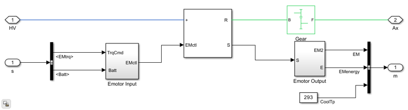

MotorDriveGear
Electric motor with lumped electrical and mechanical dynamics and a fixed gear for torque transmission to the axle.
Contents
Overview
The MotorDriveGear block models an electric motor with lumped electrical and mechanical dynamics and a fixed-ratio gear for torque transmission. The motor input block accepts torque commands, control signals, and battery state. No thermal dynamics are modeled -- temperature is treated as a fixed input. Internal signals include current, voltage, motor speed, and energy consumption.
The core motor model is provided by the EmotorLib library (Library/EmotorLib.slx). See EmotorLib for details on the underlying PMSM model and loss map.
Model: MotorDriveGear.slx
Parameters: MotorDriveGearParams.m
Thermal Coupling: None
Open Model
open_system('MotorDriveGear')

Ports
Inputs
- Torque command - Requested motor torque from the controller.
- Control signals - Enable, mode, and limit signals.
- Battery signals - HV bus voltage and current availability.
Outputs
- Motor Torque - Delivered mechanical torque.
- Motor Speed - Rotor speed.
- Electrical Power - Power drawn from the HV bus.
- Energy - Cumulative energy consumption.
Workflows
The MotorDriveGear block is listed in the VehicleElectric and VehicleElecAux templates in VehicleTemplateConfig.json as an available motor variant. It is used when fast simulation is needed without thermal effects.
Parameters
| Name | Default | Description |
|---|---|---|
| Max motor torque | 220 Nm | Peak torque capability |
| Max motor power | 50 kW | Continuous power rating |
| Torque control time constant | 0.002 s | First-order lag on torque command |
See MotorDriveGearParams.m for a complete list of parameters.